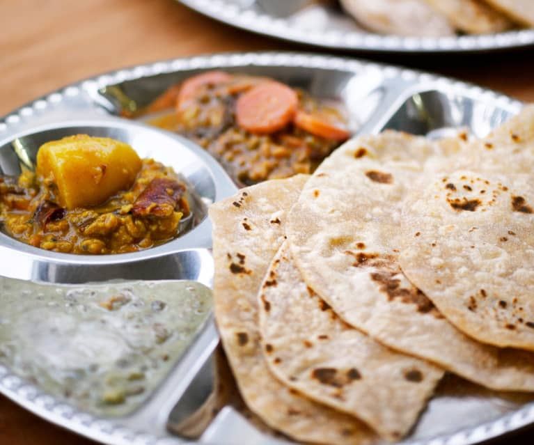

Chapathi.

About Chapathi:
Chapati or chapatti is a very common form of food item, where wheat, which is the staple of northern South Asia, is eaten or consumed by people.
Ingredients:
- 140g wholemeal flour
- 140g plain flour, plus extra for dusting
- 1 tsp salt
- 2 tbsp olive oil, plus extra for greasing
- 180ml hot water or as needed
Preparation:
- STEP 1
In a large bowl, stir together the flours and salt. Use a wooden spoon to stir in the olive oil and enough water to make a soft dough that is elastic but not sticky.
- STEP 2
Knead the dough on a lightly floured surface for 5-10 mins until it is smooth. Divide into 10 pieces, or less if you want bigger breads. Roll each piece into a ball. Let rest for a few mins.
- STEP 3
Heat a frying pan over medium heat until hot, and grease lightly. On a lightly floured surface, use a floured rolling pin to roll out the balls of dough until very thin like a tortilla.
- STEP 4
When the pan starts smoking, put a chapati on it. Cook until the underside has brown spots, about 30 seconds, then flip and cook on the other side. Put on a plate and keep warm while you cook the rest of the chapatis.